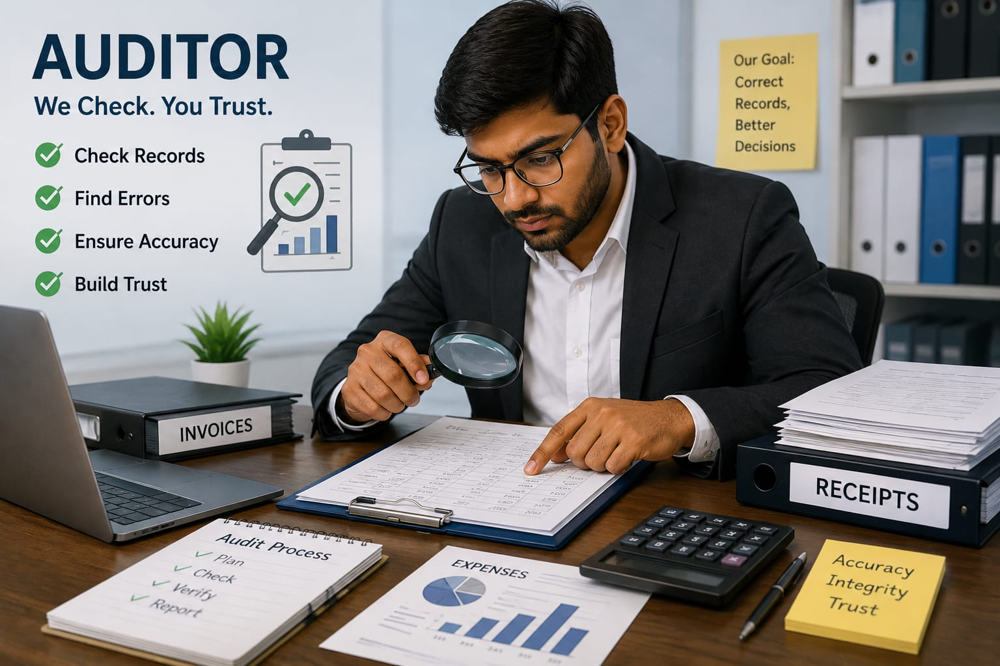

- Imagine your teacher asks you to write an exam.
- After you finish writing,teacher checks each answer carefully.
- The teacher looks for mistakes and tells you to correct them.
- In the same way, an Auditor checks the money records of a shop, company, or organization.
- If they find any mistakes, they inform the organization so the records can be corrected.
- 👉 In simple words: Auditors check whether the money records of a shop, company, or organization are correct.
Auditor
🧑🎨 What Do They Do?

🎓 How to Become an Auditor
These courses help students build a strong foundation in accounting, bookkeeping, finance, and auditing before becoming an Auditor.
Diploma in Accounting
Duration: 1 – 2 Years
Eligibility: Class 10 Pass
Entrance Exam: Merit-Based Admission / Institute-Level Test
Diploma in Accounting and Finance
Duration: 2 – 3 Years
Eligibility: Class 10 Pass
Entrance Exam: Polytechnic Entrance Exam / Merit-Based Admission
Diploma in Financial Accounting
Duration: 1 Year
Eligibility: Class 10 Pass
Entrance Exam: Merit-Based Admission / Institute-Level Test
📝 Exam Details
(Click on the exam name to see full details)
Polytechnic Entrance Exam Merit-Based Admission Institute-Level TestNote: Most Auditors begin by completing Class 12 in the Commerce stream and then pursuing a B.Com or a related degree. Diploma courses after Class 10 help build a strong foundation in accounting and finance.
These courses help students gain knowledge in accounting, auditing, taxation, finance, and business management to become an Auditor.
Bachelor of Commerce (B.Com)
Duration: 3 Years
Eligibility: 10+2 Pass (Any Stream)
Entrance Exam: CUET-UG / University Merit-Based Admission
B.Com in Accounting and Finance (BAF)
Duration: 3 Years
Eligibility: 10+2 Pass (Commerce Stream Preferred)
Entrance Exam: University Entrance Test / Merit-Based Admission
Bachelor of Business Administration (BBA) in Finance
Duration: 3 Years
Eligibility: 10+2 Pass (Any Stream)
Entrance Exam: CUET-UG / University Entrance Test / Merit-Based Admission
Chartered Accountancy (CA)
Duration: 3.5 – 5 Years
Eligibility: 10+2 Pass (Any Stream)
Entrance Exam: CA Foundation
Cost and Management Accountancy (CMA)
Duration: 3 – 4 Years
Eligibility: 10+2 Pass (Any Stream)
Entrance Exam: CMA Foundation
📝 Exam Details
(Click on the exam name to see full details)
CUET-UG University Entrance Exams Merit-Based Admission CA Foundation CMA FoundationNote: Most Auditors complete a B.Com or related degree. Many also pursue professional qualifications like CA or CMA to build expertise in auditing, accounting, and finance.
These postgraduate courses help students develop advanced knowledge in auditing, accounting, taxation, finance, and business management.
Master of Commerce (M.Com) in Accountancy
Duration: 2 Years
Eligibility: B.Com / BAF / BBA or Related Commerce Degree
Entrance Exam: CUET-PG / University Entrance Exams
Master of Business Administration (MBA) in Finance
Duration: 2 Years
Eligibility: Bachelor's Degree
Entrance Exam: CAT / XAT / MAT / CMAT / State MBA Entrance Exams
Post Graduate Diploma in Auditing & Taxation
Duration: 1 Year
Eligibility: Graduate in Commerce or Related Fields
Entrance Exam: Direct Admission / Merit-Based Admission
📝 Exam Details
(Click on the exam name to see full details)
CUET-PG CAT XAT MAT CMAT State MBA Entrance Exams University Entrance Exams Merit-Based AdmissionNote: Many Auditors continue their studies after graduation to specialize in auditing, taxation, finance, or business management and improve their career opportunities.
Note:
(Age limits, marks, and admission process may vary depending on the college or state. These courses are available in many colleges and universities across India. You can choose colleges based on your location, budget, and entrance exams.)
🏛️ Top Colleges for Auditor
(Tap on a college to view the details)
📜 After 10th Pass (Foundations / Diplomas)
Government Polytechnic, Mumbai PSG Polytechnic College, Coimbatore Government Polytechnic College, Kalamassery Thakur Polytechnic, Mumbai🎓 After 12th Pass (Bachelor's Degrees)
Shri Ram College of Commerce (SRCC), New Delhi Loyola College, Chennai Hindu College, New Delhi Narsee Monjee College of Commerce and Economics, Mumbai Hansraj College, New Delhi Christ University, Bengaluru💼 Professional Qualifications
Institute of Chartered Accountants of India (ICAI) Institute of Cost Accountants of India (ICMAI)STEP 1
Imagine you are working as an Auditor in a company.
STEP 2
You start your day by opening your computer and checking the company's money records.
STEP 3
You carefully check bills, receipts, and other documents.
STEP 4
You look for any mistakes in the money records.
STEP 5
If you find any mistakes, you tell the company so they can correct them.
STEP 6
You help the company keep its money records correct and accurate.
STEP 7
If you enjoy checking details and finding mistakes, this career may suit you.
🏢
Private Companies
Check the financial records of companies and make sure everything is accurate.
🏦
Banks
Audit financial records and help ensure banking transactions follow rules.
🏛️
Government Departments
Check how government money is collected and spent.
📋
Audit Firms
Work with different businesses to examine and verify their financial records.
🎓
Schools & Universities
Audit the financial records of educational institutions.
🏥
Hospitals
Check financial records and ensure proper use of funds.
🌍
International Organizations
Work with multinational companies and global organizations as financial auditors.
(Click Yes or No for each question)
1. Have you ever heard about Auditing?
2. Do you know that companies check their money records regularly?
3. Are you interested in learning how companies check their money records?
4. Would you like to do a job where you check whether the money records of a company are correct?
5. Imagine you are working as an Auditor in a company. You are sitting in front of a computer, checking bills, receipts, and money records to find mistakes. When you find a mistake, you help the company correct it. Does this excite you?